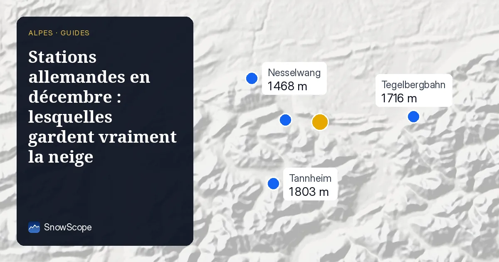

Stations allemandes en décembre : lesquelles gardent vraiment la neige
Une semaine typique de mi-décembre, seulement deux des sept domaines de ski allemands que nous avons vérifiés ont une neige suffisante pour skier en toute sécurité la plupart des années : le glacier de la Zugspitze à son sommet et le Fellhorn supérieur au-dessus d'Oberstdorf. Les autres sont moins chers à visiter mais beaucoup moins sûrs, en particulier à leurs pieds.
Consultez les prévisions neige en temps réel pour German ski areas in December sur l'application SnowScopeHauteurs de neige, alertes poudreuse et carte 3D, gratuitement.
Où la neige est fiable
Le 15 décembre, le sommet de la Zugspitze (2 627 m) accumule 30 cm ou plus dans presque chaque hiver — 100 % de nos 46 hivers d'archives. À mi-pente (1 811 m), cela atteint encore cette profondeur dans 89 % des hivers. Le Fellhorn/Kanzelwand au-dessus d'Oberstdorf raconte une histoire contrastée : 93 % des hivers voient 30 cm au sommet (1 965 m), mais seulement 59 % à mi-pente (1 441 m).
Le Garmisch-Classic se situe dans les terres intermédiaires : 89 % à son sommet (2 047 m) mais tombe à 48 % à mi-pente (1 387 m). Une fois que vous passez aux petites pistes bavaroises, les probabilités à mi-pente baissent fortement. Le Sudelfeld atteint 39 % à 1 186 m, le Brauneck seulement 28 % à 1 154 m, et l'Oberjoch 28 % à 1 342 m. Le Feldberg dans la Forêt-Noire arrive à peine : 17 % à mi-pente (1 189 m) et seulement 24 % à son sommet (1 446 m).

Ce que vous payez par jour
Les trois domaines glacier et alpin coûtent à peu près pareil : Zugspitze 70,50 EUR en ligne, Garmisch-Classic 69 EUR et Fellhorn/Kanzelwand 72,90 EUR. Les petites pistes les sousèrent : Sudelfeld, Brauneck et Oberjoch demandent tous 55 EUR par jour. Le Feldberg utilise des tarifs dynamiques, donc son prix change selon la demande.
Si vous restez six jours, la région d'Oberstdorf (Fellhorn et Kanzelwand) offre 344,50 EUR en Avent (jusqu'au 20 décembre), moins cher que le tarif annuel de 382,80 EUR. Oberjoch vend six jours pour 278 EUR. Sudelfeld et Brauneck partagent un forfait de 208 EUR qui couvre quatre journées de ski en six jours calendaires. Ni la Zugspitze ni le Garmisch-Classic ne vendent de forfait six jours.
Le piège de la neige fine
Les domaines moins élevés posent un risque de timing. Le pied du Brauneck (715 m) accumule en moyenne seulement 9 cm le 15 décembre ; celui du Sudelfeld (865 m) conserve 15 cm. Aucun pied n'a enregistré 30 cm une semaine de Noël sur toute la durée de nos archives. Le Feldberg, malgré son altitude, est encore plus serré : 4 cm au pied et seulement 8 cm au sommet (1 446 m) un jour typique de mi-décembre.
Ce ne sont pas de mauvaises pistes. Ce sont de mauvais engagements en décembre. Avec un forfait de 55 EUR par jour et une heure de route de Munich, elles ne marchent que après des chutes de neige fraîche. Utilisez la carte SnowScope et les rapports quotidiens de chaque domaine pour décider le matin même, ou la veille, si vous faites le voyage.
Valeur sur le mois
La Zugspitze l'emporte en valeur : des tarifs quasi identiques aux petites pistes, mais de la neige qui arrive chaque année à la mi-décembre. La réduction Avent du Fellhorn/Kanzelwand (344,50 EUR pour six jours) la rend compétitive si vous avez une semaine à passer et utilisez le forfait lié à Oberstdorf et au Kleinwalsertal.
Pour une seule journée hivernale, l'écart entre fiable et risqué vaut les euros supplémentaires. Réservez la Zugspitze en ligne et vous skierez. Attendez une prévision de tempête et misez sur Sudelfeld ou Oberjoch, et vous pourriez gaspiller du carburant et un jour de congé.
La semaine de Noël s'annonce meilleure
Les probabilités augmentent au fil du décembre. À la semaine de Noël (22-28 décembre), la mi-pente de la Zugspitze monte à 96 % de probabilité de 30 cm, et celle du Garmisch-Classic monte à 61 %. Même le Brauneck et le Sudelfeld s'améliorent à 37-39 % à mi-pente. Le Feldberg, cependant, reste faible : 24 % au sommet.
Si vous êtes flexible, reportez votre voyage à la semaine de Noël. Si vous devez venir à la mi-décembre, montez haut : les remontées du sommet de la Zugspitze, du Fellhorn ou du Garmisch-Classic conservent la neige quand les pistes basses ne l'ont pas.
Conseils aux skieurs
- Une journée à la mi-décembre : réservez la Zugspitze en ligne ; le plateau se situe au-dessus des nuages et la neige y est presque toujours épaisse.
- Une semaine en décembre : prenez le forfait Avent d'Oberstdorf (Fellhorn et Kanzelwand) et skiez les pistes supérieures ; les vallées sont plus fines mais les mi-pentes et les sommets livrent.
- Préalpes bavaroises et Forêt-Noire : ne visitez que après une tempête ou à la semaine de Noël ; vérifiez la carte de neige avant de partir.
- Si vous skiez hors-piste, lisez le bulletin d'avalanche bavarois, surtout sur le terrain exposé de la Zugspitze où le vent et la neige fine cachent les rochers.
- Évitez décembre entièrement au Feldberg sauf si une tempête majeure vient de passer ; la plupart des années la couverture est peu fiable jusqu'en janvier.
À propos de ces chiffres
Les hauteurs de neige des stations sont la neige la plus épaisse sur le haut du domaine à la date indiquée ; ce sont des estimations pour une zone, pas une mesure en un point. Les prévisions peuvent changer. Consultez toujours le bulletin d'avalanche officiel avant le hors-piste.
Citer ce bulletin
Pour la recherche, l'enseignement ou la presse : chiffres et graphiques réutilisables librement sous CC BY 4.0 avec cette citation.
SnowScope (2026), Stations allemandes en décembre : lesquelles gardent vraiment la neige, https://snowscope.app/blog/fr/2026/11/germany-ski-areas-december-which-hold-snow.html, consulté le 2026-11-14
SnowScope (Atlas Labs). (2026, November 14). Stations allemandes en décembre : lesquelles gardent vraiment la neige. SnowScope snow reports. https://snowscope.app/blog/fr/2026/11/germany-ski-areas-december-which-hold-snow.html
BibTeX
@misc{snowscope2026germanyskiareasdecemberw,
author = {{SnowScope (Atlas Labs)}},
title = {Stations allemandes en décembre : lesquelles gardent vraiment la neige},
year = {2026},
month = nov,
howpublished = {\url{https://snowscope.app/blog/fr/2026/11/germany-ski-areas-december-which-hold-snow.html}},
note = {Published 2026-11-14 14:24 UTC; accessed 2026-11-14}
}· CC BY 4.0 · Méthodes, données et outils →
Suivre German ski areas in December
Gratuit : un message quand la neige arrive, et la météo chaque matin.